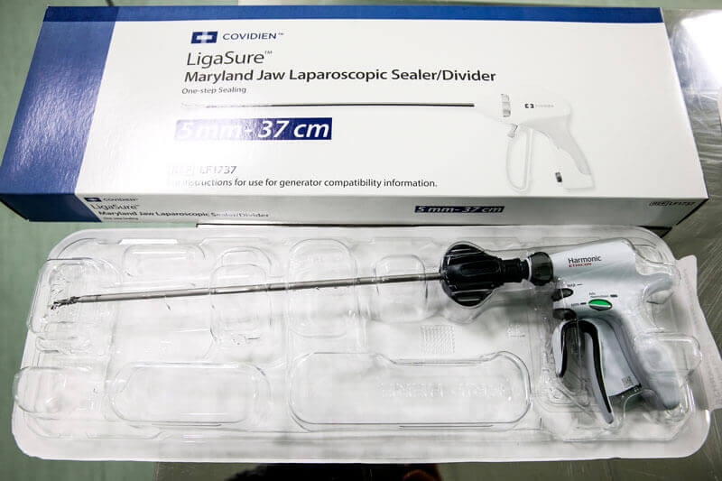
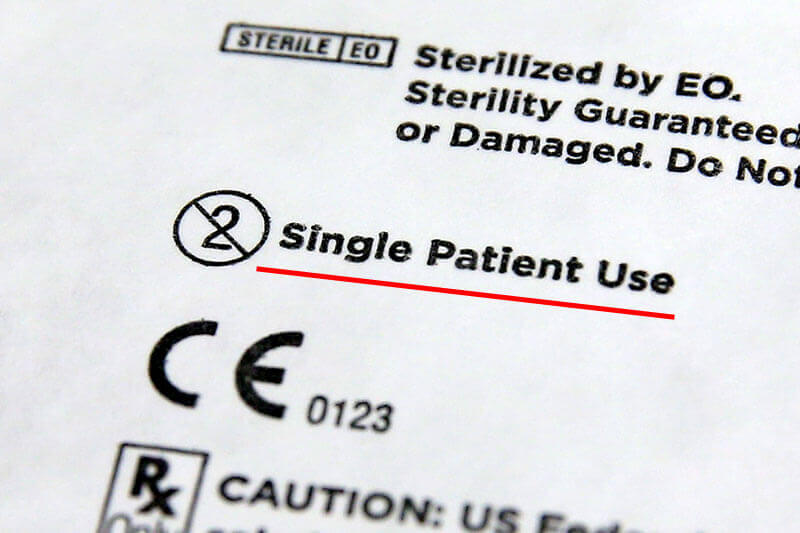
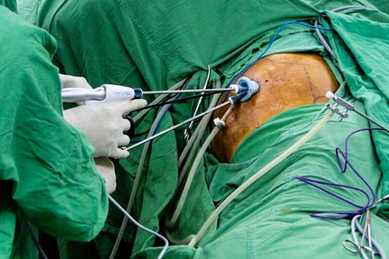
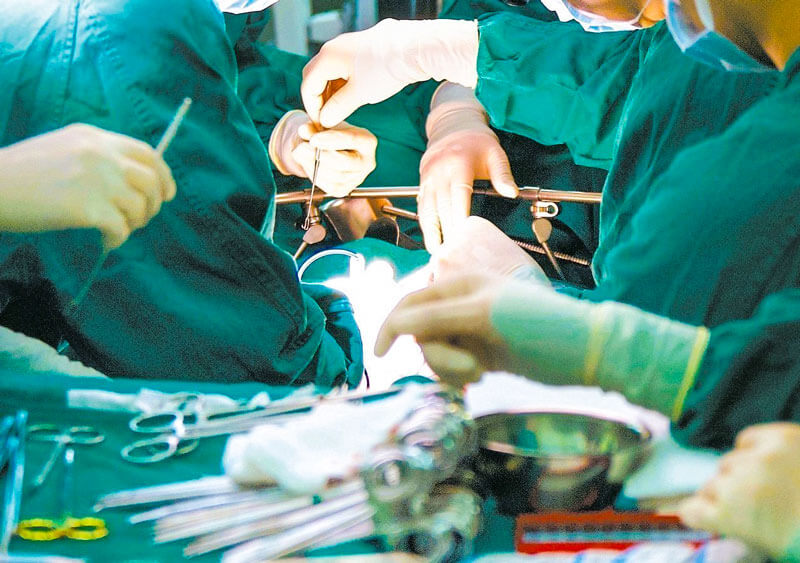
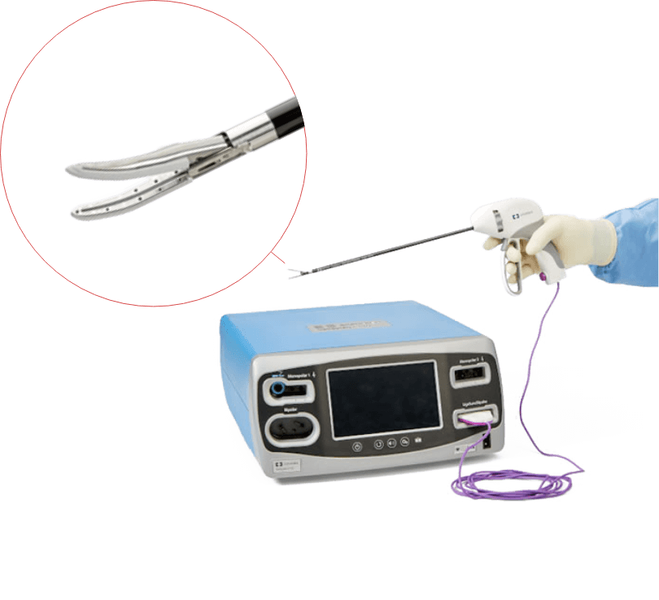
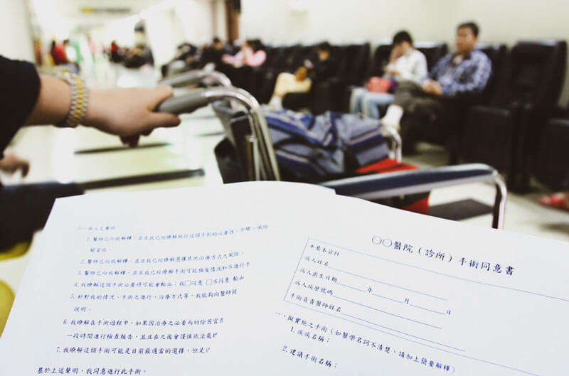
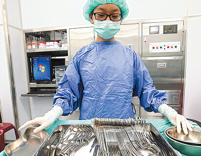
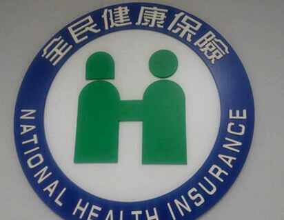

揭開白色巨塔謊言─
黑心二手醫材 病患自費成冤大頭
你的手術醫材是二手貨
手術室裡不能說的祕密─「你的開刀醫材是二手貨？」經過長期追蹤，《聯合報》挖掘到國內自費醫療的大黑洞，眾多醫院竟不顧法令與病患感染風險，私下重複使用一次性手術耗材。
採訪多位醫師、醫院均認為是醫院一片好意，「為了幫病人省錢」。更讓人驚訝的是政府官員早就發現手術室裡的黑幕，卻遲未開罰處置。長期以來讓躺在手術檯上的病患，不知情下用了第二手、第三手，甚至重複用過十次的醫材！這樁白色巨塔的謊言黑幕，讓醫病關係遭受重大挑戰。

雙極電外科器械是外科腹腔鏡手術中常用的一次性手術耗材，但許多醫院私下消毒重複使用。
全新包裝 仍有可能是二手貨
為了切除外痣的50幾歲李姓婦人，術前趴在手術檯上，醫護人員當場拆掉「雙極電外科器械」塑膠封套，意味著這是全新的，為此，她自費2、3萬元支付此醫材費用，但果真如此嗎？眼前看到的，就一定是事實嗎？
廣泛用於痔瘡切除、外科腹腔鏡手術的「雙極電外科器械」屬於一次性手術耗材，在食藥署藥證中，清楚寫著「單次使用器械」，廠商在外包裝也有標示「single patient use」，但許多醫療院所卻在消毒殺菌後重複使用。記者深入追查，在健保署「自費醫材比價網」嗅出端倪。

同款醫材 自費價差高達16倍
一套「雙極電外科器械」費用近3萬元，但在77家提供該項自費醫材的醫療院所中，卻有31家售價低於2萬5,000元。
其中11家醫院低於8,000元，台大醫院僅需6,875元，位居低價排行榜的第9名。
最便宜的是委託彰化秀傳醫療體系所經營的台南市立醫院，患者僅需自費3,000元；而價格最高的是桃園敏盛綜合醫院，自費價格高達47,500元，價格幾乎為台南市立醫院的16倍。
先不探究同樣醫材在不同醫院自費售價差距如此懸殊，低於出廠售價的醫院幾可認定重複使用「雙極電外科器械」此一次性手術耗材，只是各醫院重複使用的次數不一，有些5次，有些則可能高達10次。
圖表標題--雙極電外科器械 77家醫院自費價格
資料來源：健保署自費醫材比價網
黑心醫院重複使用10次
委託秀傳醫療體系經營的台南市立醫院重複使用一次性手術耗材，次數高達10次。
委託秀傳醫療體系經營的台南市立醫院創下全台「雙極電外科器械」最低價紀錄，病人僅需自費3,000元，秀傳醫療體系副總裁牟聯瑞坦承，基於良善的立場，想為病人省錢，平均使用8至10次，價格才能壓到如此之低，讓每個病友都用得起。
牟聯瑞說，「重複使用一次性耗材，這是無可奈何的事」，站在醫院及醫師的立場，當然希望讓病人使用全新的手術耗材，但並非每個病家都能夠負擔得起，因此才會消毒後重複使用。
台大訂消毒SOP 重複使用5次
台大醫院「雙極電外科器械」自費價格僅需近7,000元，對此，記者親訪台大醫院大腸直腸科主任梁金銅，他不諱言地表示，
“台大醫院確實重複使用「雙極電外科器械」，出發點是為了幫患者省錢，依照院內手術管理委員會所討論出來的消毒SOP規範，徹底消毒後，使用次數最高5次。”
梁金銅更驚爆，就他所了解，台大醫院在使用一次性手術耗材時，重複使用機率僅約1成，但有些醫院則超過3成以上。
手術前不知情 病人如待宰羔羊
在北部某區域醫院手術室任職多年的陳姓護理師透露，除了骨釘、骨板、骨水泥等無法回收的醫材，以及凝血劑、止血用品等醫材，不會重複使用之外，其餘原本僅限一次使用的手術醫材，大都在消毒後多次使用。
令人毛骨悚然的是，絕大部分患者不知道自己使用「二手醫材」。在北部某區域醫院任職多年的陳姓護理師說，患者術前接受麻醉，披上手術被單，推至手術檯，術後醒來怎會知道自己用過了哪些器械，而這也是部分醫院肆無忌憚地重複使用一次性手術耗材的主因。

病患在不知情的情況下，被迫使用二手醫材。
健保署早知情 卻未處理究責
據了解，健保署年初審閱「醫材比價網」資料，就發現部分醫院價格低得離譜，曾派人致電這些醫院，瞭解低價原因，原因就是重複使用。不過，這並非健保署業務，並未進一步督導究責，而只是打電話「瞭解瞭解」。
“健保署相關官員雖然瞭解比價網上部分自費醫材價格高低不一，手術縫合閉合器價差竟可高達一二十倍，卻只是打電話至醫療院所聊一聊，未能細究原因，積極處理規範，等於自廢武功。”
台灣醫療改革基金會副執行長朱顯光重批，健保署、食藥署嚴重失職，未能嚴格把關。尤其健保署明知這項陋習，卻睜一隻眼、閉一隻眼，比價網形同虛設，將自費醫材當成一般商品，只是揭露價格，未善盡把關之責。
病患恐感染血液疾病

手術器材若消毒不完全，可能引發病人交叉感染血液疾病。
國內包括台大等多家醫學中心爆發違規重複使用一次性耗材，但台北榮總安然度過風暴，甚至被喻為醫院感控模範生，原因在於民國84年「瘧疾事件」及91年「心導管事件」，前者甚至造成4人死亡，慘痛教訓宛如北榮之恥，從此以最高規格檢視醫材。
北榮曾爆瘧疾院感 釀4死
民國84年，北榮爆發瘧疾疫情，6人罹患瘧疾，調查發現，屬於院內感染，感染者均在同一天下午接受電腦斷層掃描檢查，最後其中4人不幸死亡。
疫情調查顯示，負責檢查的羅姓醫師當天一早先幫一名從非洲返國、不慎染上瘧疾的患者施打顯影劑，隨著接手的醫師一時不查，繼續使用原本應該拋棄的注射針筒，以致後面6人均感染瘧疾。
「這是非常慘痛的教訓」北榮外科部部主任馬旭說，瘧疾事件那年，他才剛進入醫界不久，記憶深刻。為此，北榮採取高規模院內感控，對於所有拋棄式（手術刀片）、一次性使用的醫材耗材（能量器械），均嚴格執行清點，確實拋棄。
馬旭強調，重複使用一次性醫材，暗藏許多感染的風險，
“以能量器械產品來說，因有長管腔設計，結構複雜，很難完全消毒殺菌，其中最怕的就是「狂牛症」，即使透過高溫，也無法殺死普里昂蛋白，恐讓患者暴露在染病風險之中。”

能量器械有長管腔設計，結構精細複雜，很難完全消毒殺菌。圖／取自柯惠醫療官網
醫材效能打折扣 增加手術風險
所有醫材都該一次性使用才對！」秀傳亞洲遠距微創手術中心副院長林忠葦表示，醫院重複使用一次性耗材，部分原因為健保對於手術基本給付費率太低，有些醫院無法打平，才會從病人自費市場下手。
林忠葦也以超音波刀為例，假設重複消毒使用5次，儘管安全無虞，但這類儀器原理為能量輸出，用到第5次時，功率越差，就代表手術的風險與失敗率也越高。
再者，患者無法得知前位動刀者的背景，如果前一位為愛滋感染者，即使經充分消毒，但還是會產生疑慮，覺得怪怪的。
手術前你該如何自保
民眾該怎麼避免使用到「二手醫材」呢？《聯合報》諮詢專家，提供以下建議：
健保署自費醫材比價網 健保署網站三大解方 改善醫病關係不對等
醫改會副執行長朱顯光指出，對於醫界重複使用一次性手術耗材，健保署不能置身事外，一旦造成患者感染、住院，相關醫療費用仍須健保買單。該如何改善現況？他提出三點建議
- 補強比價網，讓民眾更易操作
朱顯光指出，健保署自費醫材比價網過於繁複，一般病家根本看不懂，更不知如何操作，在規畫上應該更簡易親民，而不是成為健保署卸責的工具。
- 明訂使用次數上限及消毒SOP
如果有些一次性耗材必須重複使用，應透過相關醫學會向食藥署、健保署提出建議，允許重複使用，擬定次數上限，以及消毒SOP，做好感控措施。
- 手術同意書詳列自費項目
朱顯光建議，衛福部應該修改手術同意書格式，詳列手術所有自費的項目資料，包括品項、型號、價格。此外，應該比照定型化契約，病家拿到後，應有一段審閱期，可以詢問第二意見。

醫改會建議，衛福部應該修改手術同意書格式，詳列手術所有自費項目、型號、價格。
健保署：將清查比價網上醫材自費價格
對於部分醫院重複使用一次性手術耗材，執醫2、30年的李伯璋說，這在醫界確實是不能說的秘密。雖然自費特材屬於經濟自由市場，不在健保署業務範圍，但為了確保民眾就醫權益，健保署將仔細清查比價網上醫療特材的自費價格，先計算出平均值，如果價格差距過大，就會行文醫療院所，要求醫院提出解釋，說明價格昂貴的理由。
至於外界批評自費醫材比價網介面操作不便，李伯璋相當直率地說，「他不曾點進去網站，也沒查詢過，不知是否真如外界所批評的難用。」但該網站成立迄今，確實沒人管理，健保署將虛心檢討，管理必須找出重點。
衛福部醫事司司長石崇良強調，如果醫材耗材仿單上寫著「single use」，就只能做單一使用，不得重消再用，若醫師未依照仿單操作，等同違反醫師法可開罰10萬元以上、50萬元以下罰鍰，嚴重者可要求停業處分。
你可能想知道
- 採訪團隊：李樹人、鄧桂芬、陳雨鑫、簡浩正、魏忻忻
- 影像：邱德祥、報系資料照、123RF
- 製作人：蔡佩蓉
- 視覺設計：張心慈
- 網頁製作：胡凈悟
- 監製：林秀姿、潘如瑩、董谷音
- 2019.05.13
延伸閱讀
 醫療器材重新消毒再用 你用的手術醫材安全嗎？  自費醫療三不管 醫改會：上傳健保防弊端